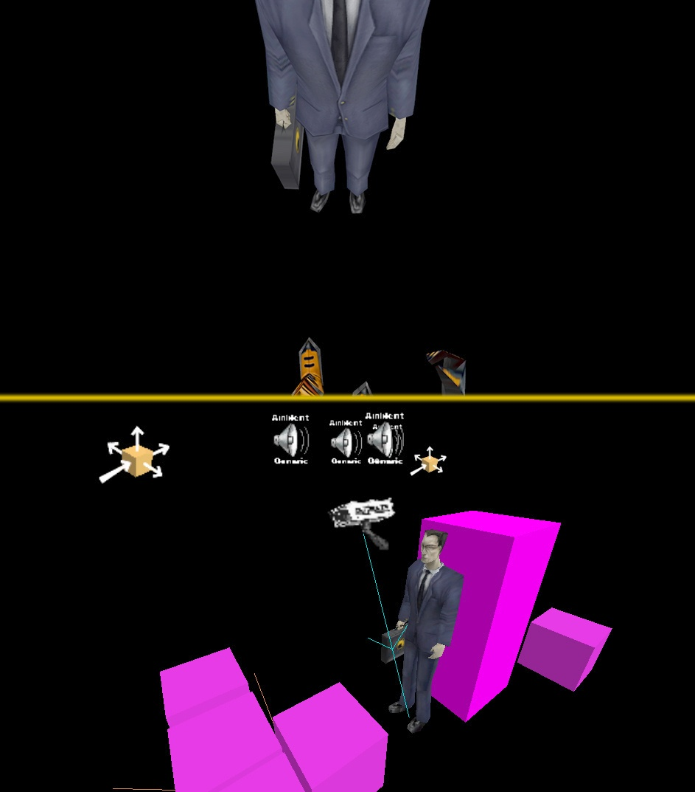

How to explain that weird scene at the end of Half-Life? The game activates a camera pointed at the G-Man's feet while freezing the player. Why? Because that's the only way to make players stand still and look straight at the G-Man to hear his speech directly in front of them.
